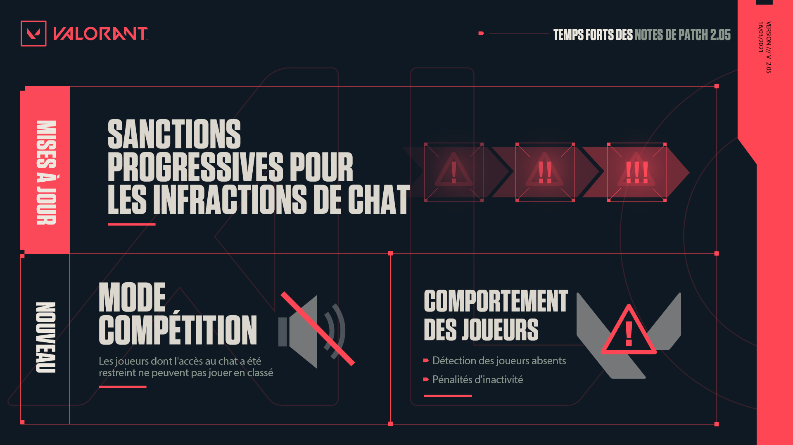

Temps fort de la mise a jours 2.05

• Une note de patch très similaire au 2.04, aucun changement sur les agents uniquement des corrections de bugs :)
Correction d'un bug à cause duquel les icones des parties en mode Compétition n'étaient pas alignés dans l'historique des parties.
Astra commence désormais les parties de Spike Rush avec 5 étoiles à sa disposition.
Killjoy ne peut plus poser son Confinement sur des éléments cosmétiques des murs en sautant.
Correction d'un bug à cause duquel la fléchette de la Caméra espionne de Cypher pouvait parfois toucher des joueurs de l'autre côté d'un mur.
Correction d'un problème à cause duquel Killjoy n'obtenait aucune charge de Bot-alarme et de Tourelle si elle rappelait ses robots après avoir été ressuscitée.
Correction d'un problème à cause duquel les ennemis morts étaient comptés parmi les ennemis aveuglés dans le rapport de combat.
Correction d'un problème à cause duquel l'audio « Plus aucune charge » d'Astra ne se lançait pas pendant Forme astrale.
Correction d'un problème à cause duquel les effets atténuant les sons ne se déclenchaient pas lorsqu'Astra était dans la partie.
Correction d'un problème à cause duquel Astra avait du mal à placer ses étoiles près des caisses du milieu d'Icebox (côté défenseurs) depuis le site A.
Le drone de Sova et Astra en forme astrale respectent désormais les raccourcis définis pour sauter/s'accroupir.
L'indicateur circulaire de portée de désamorçage apparaît à nouveau correctement après la pose du spike.
Correction d'un bug rare à cause duquel les joueurs se retrouvaient incapables de bouger ou d'entrer des commandes jusqu'à leur mort après être revenus de la forme astrale d'Astra, du drone de Sova, de l'éclaireur de Skye ou de la caméra de Cypher.
Correction d'un problème à cause duquel la crosse du Stinger pouvait apparaître détachée de l'arme sur le sol.
Amélioration de la lisibilité des noms des joueurs en mode Observateur.
Correction d'un problème à cause duquel les Traqueurs de Skye ne se déplaçaient pas sur la carte tactique de Brimstone.
Correction d'un problème à cause duquel la couleur du tableau des scores ne changeait pas correctement pour les observateurs lors du changement de côté des équipes.
Correction d'un bug à cause duquel l'icone « Problème de réseau » apparaissait alors qu'il n'y avait aucun problème de réseau.